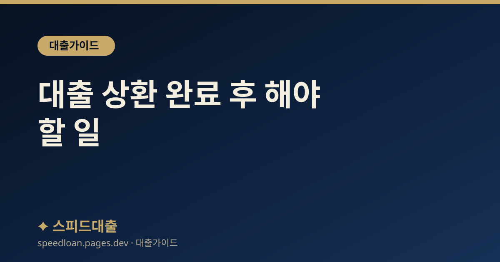

대출 상환 완료 후 해야 할 일
대출을 다 갚은 뒤 챙겨야 할 근저당 말소, 완납 확인, 신용 관리 등 마무리 절차를 정리했습니다.

상환이 끝났다고 끝이 아니다
대출을 다 갚으면 홀가분하지만, 몇 가지 마무리 절차를 챙겨야 나중에 불이익이 없습니다. 특히 담보대출은 근저당 말소를, 모든 대출은 완납 확인과 신용 정보 갱신을 챙기는 것이 좋습니다.
완납 확인부터 하기
- 원금과 이자가 모두 정산되었는지 완납(상환완료) 여부를 확인합니다.
- 자동이체를 걸어 두었다면 추가 출금이 없도록 해지합니다.
- 완납 증명(부채증명서 등)을 필요 시 발급받습니다.
완납 후에도 소액의 이자나 수수료가 남지 않았는지 확인하면 안전합니다.
담보대출이라면 근저당 말소
주택담보대출 등 담보대출을 다 갚으면 담보에 설정된 근저당을 말소해야 합니다. 말소하지 않으면 등기부에 근저당이 남아 나중에 매매·추가 대출 때 불편할 수 있습니다.
- 금융회사에서 말소에 필요한 서류를 받습니다.
- 등기소에 근저당 말소 등기를 신청합니다(법무사 대행 또는 직접).
- 말소 후 등기부등본으로 근저당이 사라졌는지 확인합니다.
신용 정보 갱신 확인
대출을 갚으면 그 정보가 신용평가에 반영되기까지 시간이 걸릴 수 있습니다. 일정 기간 뒤 신용점수 관리 앱에서 대출 상환이 제대로 반영됐는지 확인하는 것이 좋습니다.
마이너스통장·한도는 어떻게
다 갚은 마이너스통장이나 쓰지 않는 한도는 그대로 두면 부채로 잡혀 다른 대출 한도를 줄일 수 있습니다. 앞으로 쓸 일이 없다면 정리하는 것을 검토하세요.
- 쓰지 않는 한도는 다른 대출 심사에 부담이 될 수 있습니다.
- 다만 오래 유지한 거래는 신용에 긍정적일 수 있어 상황에 맞게 판단하세요.
다음 대출을 위한 관리
- 성실 상환 이력은 신용에 긍정적으로 작용합니다.
- 연체 없이 관리한 기록을 이어가세요.
- 다음 대출 계획이 있다면 대출 상환계획 세우기를 참고하세요.
서류·기록 보관
- 완납 증명, 근저당 말소 확인 서류를 보관합니다.
- 계약서와 상환 내역을 일정 기간 보관합니다.
- 분쟁이나 확인이 필요할 때 근거가 됩니다.
전세대출·보증도 마무리 확인
전세자금대출을 상환했거나 계약이 끝났다면, 보증기관의 보증 종료와 관련 서류도 함께 확인하는 것이 좋습니다. 상환과 관련된 처리가 모두 끝났는지 챙기면 나중에 혼선이 없습니다.
- 전세대출 상환 시 보증 종료·정산 여부를 확인합니다.
- 임대인·보증기관과 얽힌 정산이 남아 있지 않은지 확인합니다.
- 관련 서류는 일정 기간 보관합니다.
완납 후 흔히 놓치는 것
- 자동이체 해지를 깜빡해 불필요한 출금이 되는 경우
- 근저당 말소를 미뤄 나중에 매매·대출 때 지연되는 경우
- 완납 증명을 받아 두지 않아 나중에 확인이 어려운 경우
- 쓰지 않는 한도를 방치해 새 대출 한도가 줄어드는 경우
작은 마무리 하나가 다음 금융 거래를 매끄럽게 만듭니다. 상환 직후 체크리스트로 한 번에 정리해 두세요.
마무리 점검
상환 완료 후에는 완납 확인, 근저당 말소(담보대출), 신용 정보 갱신 확인, 불필요한 한도 정리 순으로 챙기면 깔끔합니다. 이렇게 마무리해 두면 다음에 부동산대출 등 새 대출이 필요할 때도 수월하고, 대출 한도를 높이는 방법에서 설명한 대로 좋은 신용 상태를 이어갈 수 있습니다.
자주 묻는 질문
근저당 말소는 꼭 해야 하나요?
자동으로 사라지지 않으므로 직접 신청해야 합니다. 말소하지 않으면 등기부에 근저당이 남아 매매나 추가 대출 때 불편할 수 있습니다. 매도나 다른 대출을 앞두고 있다면 미리 말소해 두는 것이 좋으며, 방치하면 나중에 서류를 다시 준비해야 할 수 있습니다.
근저당 말소는 어떻게 하나요?
금융회사에서 말소 서류를 받아 등기소에 말소 등기를 신청합니다. 직접 하거나 법무사에 대행을 맡길 수 있으며, 소정의 비용이 들 수 있습니다. 셀프로 하면 비용을 아낄 수 있고, 절차가 복잡하게 느껴지면 법무사 대행이 편리합니다.
대출을 갚으면 신용점수가 바로 오르나요?
상환 정보가 반영되기까지 시간이 걸릴 수 있습니다. 일정 기간 뒤 신용평가사 앱에서 반영 여부를 확인하세요. 갱신이 늦으면 금융회사나 신용평가사에 정보 반영을 요청할 수 있습니다.
다 갚은 마이너스통장은 해지하는 게 좋나요?
앞으로 쓸 일이 없다면 정리하는 것이 다른 대출 한도에 도움이 될 수 있습니다. 다만 오래 유지한 거래는 신용에 긍정적일 수 있고, 해지 전 급하게 쓸 일이 없는지도 확인해 상황에 맞게 판단하세요.
공식 참고 기관
본 사이트의 콘텐츠는 아래 공공·공식 기관의 공개 자료를 참고하여 작성하며, 구체적인 조건과 최신 제도는 해당 기관에서 직접 확인하시기 바랍니다.
본 사이트는 대출을 직접 제공하거나 중개하지 않으며, 금융상품 가입을 권유하지 않습니다. 모든 정보는 일반적인 참고용이며, 실제 대출 가능 여부, 한도, 금리, 조건은 금융회사 심사와 개인 신용상태에 따라 달라질 수 있습니다.